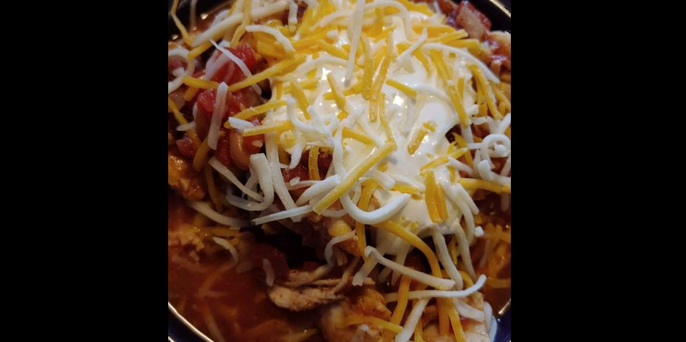

You can call this soup or chili, but either way it is wonderful! This recipe is also very adaptable to your personal taste. I recommend using Bill Echols' Taco Seasoning from this website. Serve topped with shredded Cheddar cheese, a dollop of sour cream, and crushed tortilla chips, if you like. I hope you enjoy!

Steps
- Step 1
Place the onion, chili beans, black beans, corn, tomato sauce, beer, and diced tomatoes in a slow cooker. Add taco seasoning, and stir to blend. Lay chicken breasts on top of the mixture, pressing down slightly until just covered by the other ingredients. Set slow cooker for low heat, cover, and cook for 5 hours.
- Step 2
Remove chicken breasts from the soup, and allow to cool long enough to be handled. Stir the shredded chicken back into the soup, and continue cooking for 2 hours. Serve topped with shredded Cheddar cheese, a dollop of sour cream, and crushed tortilla chips, if desired.
Ingredients
- 1 onion, chopped
- 1 (16 ounce) can chili beans
- 1 (15 ounce) can black beans
- 1 (15 ounce) can whole kernel corn, drained
- 1 (8 ounce) can tomato sauce
- 1 (12 fluid ounce) can or bottle beer
- 2 (10 ounce) cans diced tomatoes with green chilies, undrained
- 1 (1.25 ounce) package taco seasoning
- 3 whole skinless, boneless chicken breasts
- 1 (8 ounce) package shredded Cheddar cheese (Optional)
- 1 (8 ounce) container sour cream
- 1 cup crushed tortilla chips